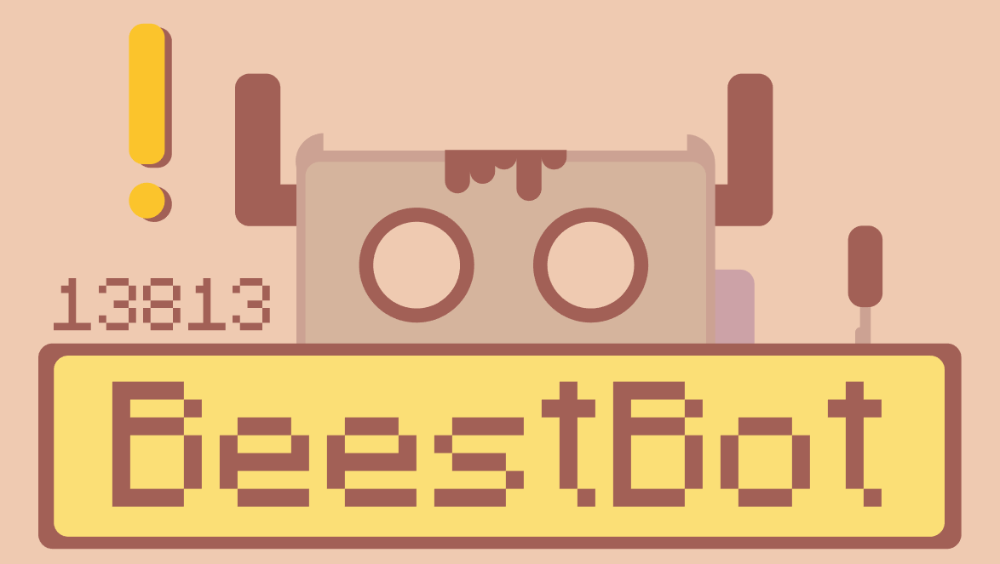
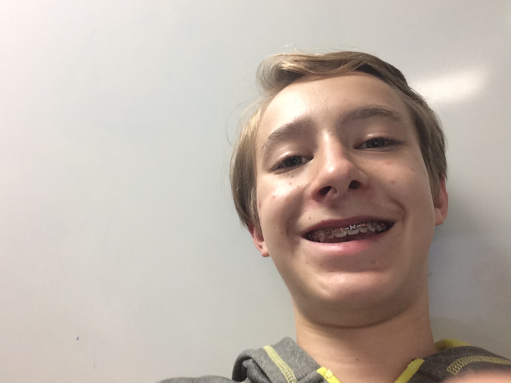
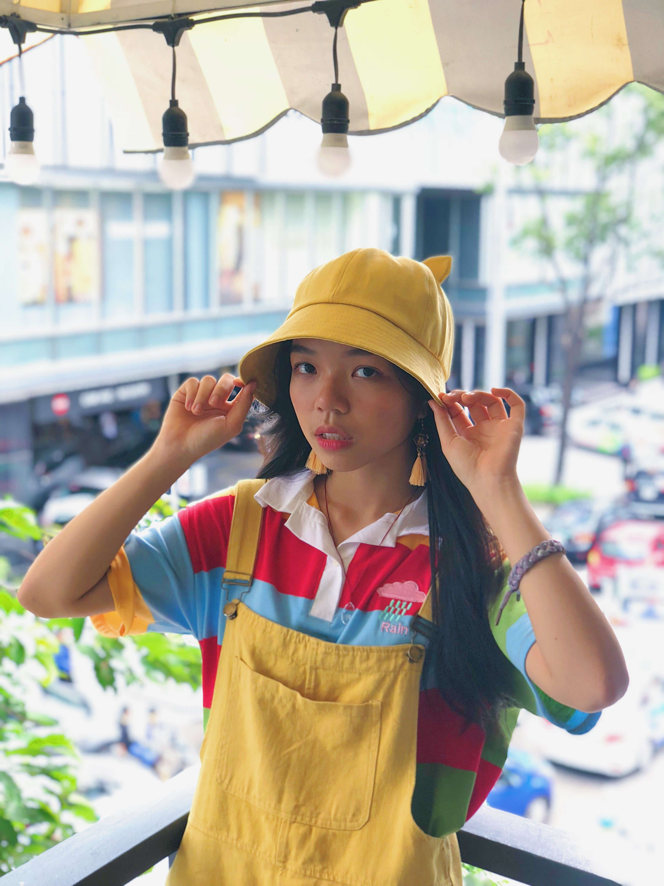

We are:
A group of high school students interested in the STEAM field.
We help educate younger students in our community!
What we can do:
ROBOT DEVELOPMENT
EDUCATING COMMUNITY
WIN AWARDS
Awards So Far:
FTC Judges Award - 2018
Members (31):
Hanke Chen - Founder, Programmer
/**
Hi. My name is Hanke Chen. I am a sophomore at Sandy Spring Friends School who really love science. I am also skilled with different technologies about computer science and mathematical algorithm to make science happen. I always welcome inspirational ideas and challenges from people. Knowledges in the textbook about quantum mechanics unceasingly motivate my explorations of the nature. I leaded a team called KokiCraft, a game server, from 2014. We produced qualified content for players to enjoy through programing, designing and testing the game. The challenges from setting up the server, coding for databases, and advocating to defending hackers let me understand what’s like to get my first pot of gold. I am the initiator of the robotic club in SSFS, a club that aim to a robotic competition. Using our own brain, we build and program a robot that participate in FTC competition. I enjoy this opportunity to help people designing and running their business. I am looking forward to work with people as well as gaining experience from this program.
**/

Qian Wang - Founder, Engeneer
/**
My name is Qian Wang, and I am a sophomore at Sandy Spring Friends School who is really interested in programming and mechanical engineering. I started to build robots before I entered kindergarten. I have been participating in robotics competitions in China from third grade in elementary school. As robotics wasn’t being seen as a very important field for the younger generation to enter at that time in China, I was the only student represented my entire Elementary school’s robotics team. The first time I got the third place, and second time, the first place. When building robots, I learnt the importance of programming. I secretly signed up for a programming course in my region. As I started to dig deeper in the field of programming, I met a group in my junior high who were also interested in programming. We took on the OI (Olympiads of Informatics) team of our school, and we gradually moved up to the national competitions. As I came to the US, I was thrilled to have the opportunity to start the Robotics club with my friends to continue my interest on programming and mechanical engineering. And using the platform of the FIRST competitions, I am looking forward to finding more friends who shares the same interest to learn from them and share my experiences.
**/

Gus - _____________(fill in the blank) Director
/**
My name is Gus Ross and I am a freshman. I have done FLL for three years now and this is my first year doing FTC. I have background experience in programming python, scratch, and Mindstorm. As well as programming, I have spent some time building robots. In my free time, I work on programming, music, and video games. When the weather is nice, I take my drone out to fly as well. I have much experience in the leadership field as well. I look forward to learning new things and seeing our robot’s progress to competing.
**/
Shirley - Engeneering Director
/**
I am an international sophomore at SSFS. I have some experiences on engineering and low-level programing, such as robot-C. I am looking forward to the new year.
**/

Chloe Nguyen - Web Developer, Activity Manager
/**
Vietnamese Junior Coding, designing, and connecting people Follow me on Instagram: mchaauuu
**/
Jeffrey Wang - Hardware and Software Engeneer
/**
Hello, I’m Jeffrey Wang. I’m a sophomore at Sandy Spring Friends School who is interested in design and engineering. I have learnt about robot building technique when I was in 8th grade middle school. I started from the most basic exercise of robot building, but then I found that I’m actually a better designer than builder. I can do some programming, too, but I’m not good at it yet. I’ve joined a few competitions when I was in China. Although those competitions were not organized in big scale since they were just inter-school competitions, I still learnt lot from the time I spent with my team and opponents. However, I stopped doing robotics after I decided to come to the states for further education, but I’m confident that my hands and brain still remember how to do the job that I used to be good at. I’m hoping to meet more people who are interested in robotic, and it’s also a good chance for me to pick up something that I dropped off.
**/
Beest Bot.
/**
Robot beestBot = new Robot(Owner ssfs, Religion quaker, Function null);
beestBot.say("Hello World!");
**/